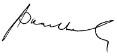

We are pleased to present our Report for the financial year ended 31 December 2014.
The Board is ultimately responsible for the Group’s system of internal controls and risk management and it discharges its duties in this area by:
The Directors have delegated that responsibility to the audit committee to assist the Board with regard to the roles and responsibilities as set out in 1.3 below of this Report.
Following a detailed review of our risk management structures and resources in and changes introduced to the Group’s risk management framework, the Board agreed to delegate the risk management responsibilities to a separate sub-committee comprising Independent Non-Executive Directors in an attempt to strengthen the risk management process.
The audit committee has adopted a formal terms of reference and internal audit charter approved by the Board of Directors. The committee has conducted its affairs in compliance with this term of reference and has discharged its responsibilities contained therein. The term of reference is available on request.
The committee consists of five NEDs of whom 3 are Independent Directors and they meet at least six times per annum as per the terms of reference.
The Chief Executive, Chief Finance Officer and the Head of internal audit and external auditor attend meetings by invitation.
During the year under review, five meetings were held and the meeting scheduled for November 2014 was cancelled due to unavoidable circumstances.
The composition of the audit committee as at 31 December 2014 is as follows:
Mr. Kalinga Indatissa - Chairman
Mr. Chan Chee Beng
Mr. Jayantha Dharmadasa
Ms. Pushpa Wellappili
Ms. Lai Choon Foong (appointed w.e.f. 9 May 2014)
Subsequent to the changes in the Directorate the audit committee was re-constituted as follows:
Mr. Chan Chee Beng - Chairman
Ms. Lai Choon Foong
Ms. G. D. Chandra Ekanayake
Ms. Nilanthi Pieris
Biographical details of the members are set out under Board of Directors section.
As required by the Listing Rules, Mr. Chan Chee Beng is a fellow member of the Institute of Chartered Accountants of England and Wales while Ms. Lai is a Chartered Accountant of the Malaysian Institute of Accountants and a Certified Practicing Accountant of CPA Australia. The Board considers that the members have an excellent mix of skills and expertise in commercial, financial and audit matters arising from the senior positions they hold or previously held in other organisations.
The Company Secretary is secretary to the Audit Committee.
The role and responsibilities of the audit committee are set out in full in the written terms of reference, which are available on the Company’s website - www.slt.lk.
The activities undertaken by the audit committee in respect of its principal responsibilities during the year ended 31December 2014 are summarised below:
Monitor the integrity of the Group’s interim and annual financial statements and review significant financial reporting judgments contained in them prior to their publication. This included a review of the accounting policies and practices, major judgemental areas and compliance with stock exchange, legal and regulatory requirements.
The audit committee discussed these matters with the external auditor as part of the review of the findings from the audit of the Group financial statements. The committee also discussed with the external auditors their review of the interim financial statements.
Makes recommendation to the Board on the reappointment of external auditors of the Company, KPMG a registered auditor which, in the opinion of the committee is independent, determines the fees to be paid to the external auditor and their terms of engagement; ensures that the appointment of the external auditor complies with the Companies Act and any other legislation relating to the appointment of auditors, determines the nature and extent of those non-audit services that the external auditor may provide to the Company (and the Group).
The audit committee approves the annual audit plan for the Group internal audit function. The internal audit submits periodic internal audit reports carried out in line with the approved annual audit plan. The internal audit reports highlight the gaps in the systems and procedures in place and recommend improvements to the existing systems and procedures where necessary after negotiating with the management. Internal audit follows up the implementation of recommendations and reports progress to the management and the audit committee.
Ensures that it is adequately resourced and has appropriate standing within the Group. In the event of the required resources with the required expertise are not available within the internal audit division, committee approves to engage with external parties to carry on such audits.
The Head of internal audit has direct access to the Chairman of the audit committee and the audit committee meets with the Head of Internal Audit on a regular basis without the presence of management.
The audit committee receives regular reports from internal audit, which include summaries of the key findings of each audit in the period.
The internal audit assists the committee to assess the effectiveness of the Group’s operational and financial controls and procedures which include authorisation limits for expenditure, sales contracts and capital expenditure, signing authorities, IT application controls, organisation structure, Group policies, segregation of duties and reviews by management. The gaps identified thereon will be reported to the Board with recommendation for improvement.
The audit committee met five times during the year. It also convenes additional meetings as and when necessary.
The activities carried out at the meetings held during the year under review are as follows:
| Date of meeting | Main activities carried out |
20 February 2014 |
|
9 May 2014 |
|
27 June 2014 |
|
15 August 2014 |
|
26 September 2014 |
|
Details of the fees paid to the external auditor during 2014 is disclosed in Note 7 to the financial statements.
On behalf of the
Audit committee

Chan Chee Beng
Chairman of the audit committee
27 February 2015
Colombo